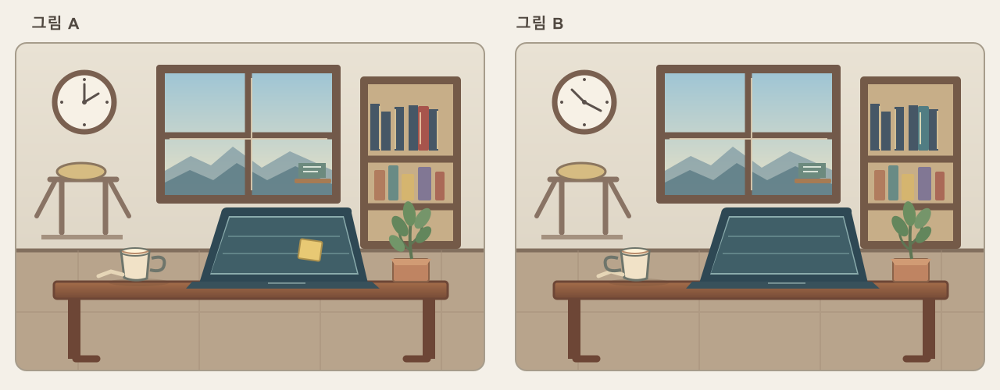

시작 전 확인
아이디를
입력해 주세요.
이 아이디로 두 과제의 기록을 하나의 파일에 묶습니다. 비밀번호는 필요하지 않습니다.
진행할 과제
- 1문장 따라 쓰기
- 2틀린 그림 찾기
아이디 확인 완료
아이디가
확인되었습니다.
아래 아이디가 과제 기록에 사용됩니다.
학생 아이디
과제 1 / 2
학생 아이디
문장을 따라 써 주세요.
아래 문장을 읽고, 마우스를 누른 채 빈 칸에 그대로 작성해 주세요. 여러 줄로 써도 됩니다.
따라 쓸 문장
상충하는 가설을 검증하려면 관찰 가능한 예측을 명시하고, 우연한 상관관계를 인과적 설명으로 오인하지 않도록 반례를 함께 검토해야 한다.
손글씨 입력
기록 중마우스 왼쪽 버튼을 누른 채 움직이면 획이 기록됩니다. 이 단계에서는 새로고침하면 기록이 사라집니다.
아직 기록된 획이 없습니다.
과제 1 / 2 완료
문장 쓰기를
마쳤습니다.
손글씨 획의 순서, 좌표, 시각이 현재 페이지에 기록되었습니다.
학생 아이디
기록된 획
소요 시간
다음 과제는 틀린 그림 찾기입니다. 과제를 모두 마칠 때까지 페이지를 닫거나 새로고침하지 마세요.
과제 2 / 2
학생 아이디
두 그림을 살펴보세요.
다른 부분을 찾아보세요. 찾은 곳을 클릭하거나 표시할 필요는 없습니다. 그림 위에서 움직인 마우스 경로만 기록됩니다.
충분히 살펴본 뒤 아래의 완료하고 JSON 다운로드 버튼을 누르세요.

그림을 불러오는 중입니다.
두 과제 완료
기록 파일을
확인해 주세요.
두 과제의 JSON 파일 다운로드가 시작되었습니다. 브라우저의 다운로드 목록에서 파일이 저장되었는지 확인해 주세요.
학생 아이디
손글씨 획
마우스 위치
파일 이름